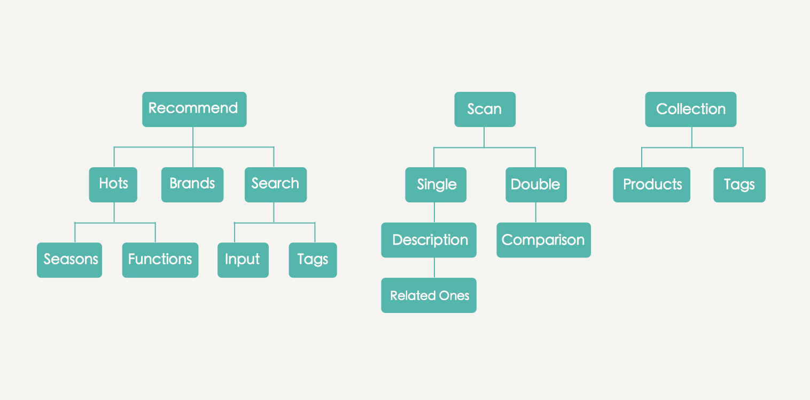

Timeline
Sept.2015 - May.2016
Timeline
Sept.2015 - May.2016
Location
Paris, France
My Role
App design, idea generation
Android platform development
Usability test
Market analysis
Deliverables
Interactive PrototypeTransmetics is a start-up project for helping foreigners find suitable cosmetics in France. By Transmetics, user can get informations about this cosmetic product in their mother language(Chinese provided for now). Based on scaning, recommendation, comparision these functions, user can choose suitable French cosmetics even if they do not know French. Transmetics is being developed for Android platform. Our revenue stream includes selling advertisements and advanced funtions in pro-version.
Current French skin care products only have French descriptions on package, making it hard for non-native French speakers to understand. What's more, People find it hard to seek for cosmetics that are suitable for their skin type. Starting from the problem, we conducted questionnaires and interviews to know more about our target users.

To figure our who is our target user and what are main problems we need to solve, we gave away both Chinese and English version of questionnaires in front of a local pharmacy.
Our target users were non-French speakers including Chinese and English-speaking people from other countries. Total number: 35. The key findings were as below:

Persona
Bingbing, female, Chinese, 26 years old, workplace new, non-French speaker, care about her skin, has passions in cosmetics, travelling in France at present.

Scenario - When purchasing:

Bingbing has heard a lot about the populartity of French cosmetics, so she comes inside a Pharmacy and want to buy something suitable for herself. However she had a hard time choosing which one to buy. When she see a cosmetic is in discount, she is curious about what is the product used for. So she use Transmetics to scan the barcode of the product and it gives her the information that she cares most about the product. Then Bingbing find two similar products which she both like and she can not decide which one to buy. She use the double scan function to scan the barcodes of the two cosmetics and get the comparison information between them.
Scenario - Before/ After purchasing:
Coming out of the pharmacy after buying some products, Bingbing wants to find more good French cosmetics. So she opens the Transmetics application at her room and see some recommendations of cosmetics about her skin types. She reads the Chinese descriptions of it and thinks it's suitable for her. Then she click the heart button to add the product to her collections so that she can check it next time she buy cosmetics. Also she collects the tags that she cares such as her skin type and some useful functions.

According to the users' needs from interviews and results from questionnaire, we basically finished the first version of our wireframe.

Based on our first version paper prototype, we did some usability test. After summarized feedbacks and observations in pharmacy, we removed voice guide this function. Besides, by considering technical issues, the information architecture of our application was quite obvious as below:
The UI Design and App implemetation was working around same time based on the information architecture and our hi-fi prototype. This an overview of our app's interaction sitemap.

We also did usability test after the implementation of the basic functions in Transmetics, which includes 6 lab tests and 8 contextual tests we did. During the test we asked user to finish several tasks, as below: